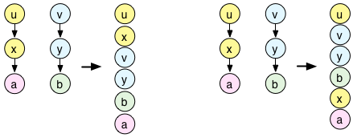
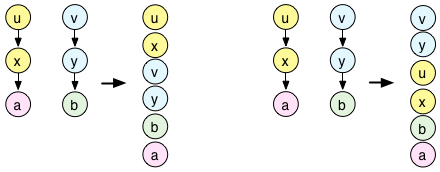

An IdentityDictionary is an associative collection mapping keys to values. Keys and values can be arbitrary objects, but for keys, often a Symbol is used.
Often, the subclass Event is used as an IdentityDictionary, because there is a syntactical shortcut:
a = (); // return a new Event. a.put(\foo, 2.718); a.at(\foo);
The contents of a Dictionary are unordered. You must not depend on the order of items in a Dictionary.
IdentityDictionary is often used to assign names to instances of a particular class. For example, the proxy classes ( Pdef, Pdefn, Tdef, Ndef ), and NodeWatcher all have class variables named all implemented as IdentityDictionaries.
IdentityDictionary has three levels of content: the dictionary itself, a proto, and a parent. proto and parent exist primarily for IdentityDictionary's subclass Event, which uses the parent to store action functions that will be used when an event is played. Users may put additional default values into the proto.
Looking up a key within a dictionary first checks the dictionary itself. If the key is not found at this level, it looks in the proto, and if still not found, it looks in the parent.
These extra levels are meant for common, default values that should be the same across many dictionary instances.
proto and parent values are not shown when posting the dictionary.do -- they will not be processed in the iteration, and as with copy, they are identical references.// 'b' is not posted
e = IdentityDictionary(8,
parent: IdentityDictionary[\b -> 10]
).put(\a, 5);
-> IdentityDictionary[ (a -> 5) ]
// But 'b' is still there
e[\a] + e[\b]
-> 15
// Iteration touches 'a' only
e.keysValuesDo { |key, value| [key, value].postln };
-> [ a, 5 ]
// 'collect' is also an iteration, and doesn't touch the parent
g = e.collect { |x| x * 5 };
-> IdentityDictionary[ (a -> 25) ]
g[\b]
-> 10
// The parent goes into a copy as well
g = e.copy;
g[\b]
// But it's by reference: 'e' and 'g' have the same parent
g.parent[\b] = 20;
e[\b]
-> 20
The -parent and -proto instance variables allow additional IdentityDictionary's to provide default values. The precedence order for determining the value of a key is the IdentityDictionary, its prototype, its parent.
When the instance variable -know is True, the IdentityDictionary responds to unknown messages by looking up the selector and evaluating the result with the dictionary as an argument. For example:
a = IdentityDictionary(know: true);
a.put(\foo, { | x, y | "--".postln; ("x:" ++ x).postln; ("y:" ++ y).postln; y.squared });
a.foo(-10.01);
In the subclass Event, "know" is true by default, so that it can be instantly used for prototype objects. The first argument passed to the functions is in such cases always the dictionary/event itself (here denoted by "self").
a = (some_value: 7, fuzzy_plus: { |self, a, b| a + b * rrand(0.9, 1.1) });
a.some_value; // returns 7
a.some_value = 8; // sets it to 8
a.fuzzy_plus(7, 4);
If set to true, the dictionary interprets method calls as look ups. This allows you to implement object prototypes (see above).
Sets key to newValue, returns the previous value of key.
a = (z: 100); x = a.putGet(\z, -1); // x is now 100
Returns true if the key exists in the dictionary
(j:8).includesKey(\j) // true
Returns the key for a given value (it'll return the first it finds, so this may be ambiguous).
(j:8, k: 9).findKeyForValue(8); // returns \j
If such reverse lookup is needed a lot, for efficiency you may consider using a TwoWayIdentityDictionary instead.
The two instance variables proto and parent may hold dictionaries which are used to look up all those keys that have no value in the current dictionary. First, proto is looked up, then parent. In other words: proto overrides parent. This allows you to construct systems with complex defaults or multiple inheritance.
x = (freq: 30); a = (amp: 1).parent_(x); a.at(\freq); // returns 30 a.proto_((freq: 20)); a.at(\freq); // returns 20 y = (i: -1); b.parent_(y); a.at(\i); // returns -1 a.cs;
x = (freq: 30); a = (amp: 1).parent_(x); y = (freq: 300); b = (amp: 0.5).parent_(y); a.parent_(b); a.at(\freq); // returns 300 a.cs;
Inserts a dictionary into the chain of parents of the receiver (rather than replacing the parent).
| newParent |
The dictionary that is added to the parent chain |
| insertionDepth |
Level at which the new parent is inserted. Zero (default) means directly above, Inf means at the top of the parent chain. |
| reverseInsertionDepth |
If the new parent dictionary has parents itself, this parameter specifies where the original parents are placed in the new parent chain. Zero means directly above, Inf (default) means at the top of the chain. 
Compare a.insertParent(b, 0) and a.insertParent(b, 1) 
Compare a.insertParent(b, 0, inf) and a.insertParent(b, 0, 0) |
Use a dictionary to represent timing information.
(
SynthDef(\help_sinegrain,
{ arg out=0, freq=440, sustain=0.05;
var env;
env = EnvGen.kr(Env.perc(0.01, sustain, 0.2), doneAction: Done.freeSelf);
Out.ar(out, SinOsc.ar(freq, 0.5pi, env))
}).add;
a = Pbind(\instrument, \help_sinegrain, \note, Pseq([0, 7, 2, 9, 11, 10, 9, 8], inf), \dur, 1);
a.play(quant:(quant: 1, phase: 0));
a.play(quant:(quant: 1, phase: 1/3));
a.play(quant:(quant: 1, phase: 1.0.rand));
)
For optimizing the garbage collector load, objects can be frozen and become immutable. This method creates a new dictionary with the frozen instance as a parent so that all contents can be overwritten without losing this optimization.